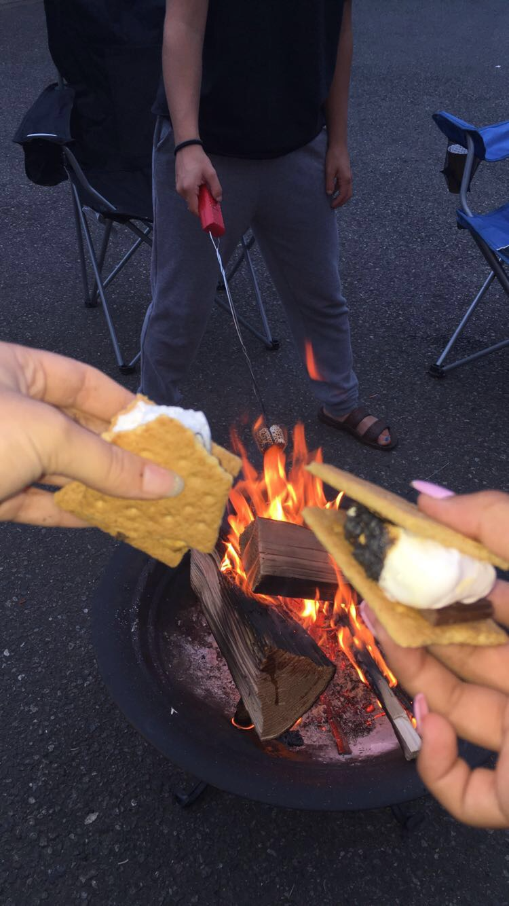
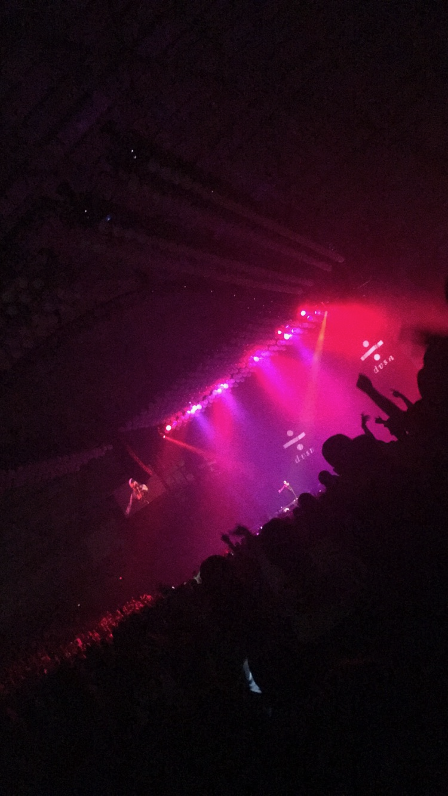

Resume

Here is project 1. This project is my current and up to date resume including details about my education history and my work history.
My Favorite Sweet Treat

Here is project 2. This project is a recipe for one of my favorite sweet treats, Rice Krispy Treats. Although in the about me section of this portfolio I mentioned that banana bread is my favorite food, Rice Krispy Treats come in a close second.
This web page uses three colors to contrast sections within the site. This project shows the power and dynamics of color and accessible color choices.
My Favorite City

Here is project 3. This project transports you to my favorite city in the world, Kona, Hawaii. From rich culture to unforgettable experiences, Kona will always have a special place in my heart. Nothing beats the beautiful white sandy beaches and calm ocean breeze.
This web page shows the magic of floating elements and how it can make any page more accessible and eay to navigate.
My Favorite Music Videos

Here is project 5. In this project you take a deep dive into some of my favorite music videos from some of my most beloved music genres. From rock to country to indie, you will get a little sneak peak into my diverse music taste.
This project demonstrates the proper way to use sematic HTML as well as how to embed video into your websites, a very powerful skill to know. This concept takes your website a step further than simply embedding an external link for your audience to click on. It allows for easy accessibility because it allows them to stay on your page.